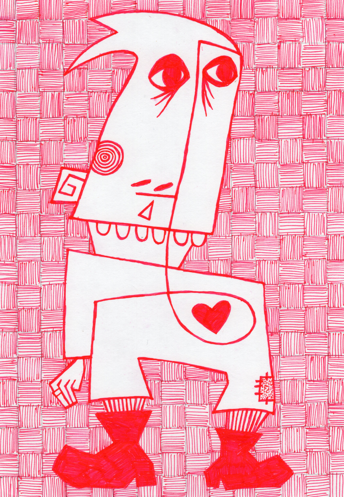
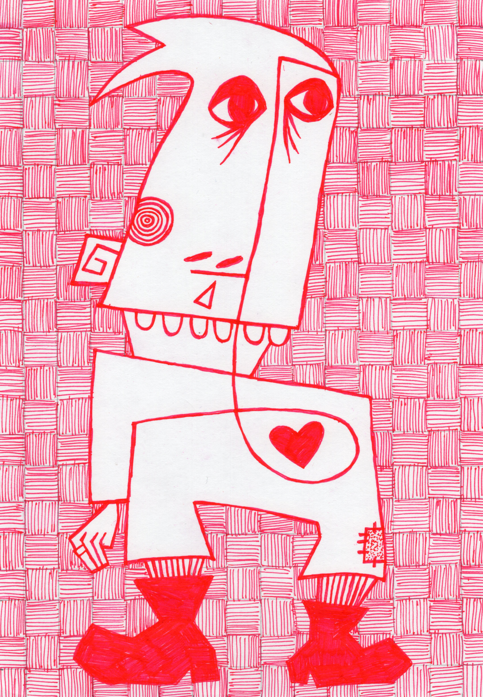

some drawings ⋆⁺₊⋆ ˘◡˘ ☾⋆⁺₊⋆
__________
i haven't been drawing too terribly much in the past couple weeks, and i've been feverishly making this website the past couple of days, so i only have some older drawings i've done over the last few months
i feel like i have finally found a style that i can keep consistent and relatively interesting. i feel that i have been inspired a lot by the cubists, i really like the flattened look of interlocking planes and strange geometric shapes. also heavily inspired by daniel johnston and otto benson and james castle and keith haring and van hovak
i don't go in with any plans when i start a drawing, that's something that's never really worked for me. instead, i look away from the paper and scribble a single line. then i turn the paper till a figure pops out at me, maybe a curve looks like an eye or a squiggle would make a great leg. the drawing evolves from there
i've never been good at making a "whole" piece of art. i think i can come up with interesting subjects, but then i'm at a loss when it comes to filling the background or creating an environment for the subject to live in. i'm not really a process oriented person, i am very impatient and struggle to see and execute the necessary steps to take in order to reach the finished vision i have in my head. this usually prevents me from getting past the initial sketching of any piece. but i've found this random scribbling works well for me as the drawing appears before me as i scribble aimlessly and rotate the paper and squint my eyes until the image pops out at me. and as i add details, the image builds and more ideas arise and i make something that i really like!
i've been doing the patterned backgrounds mostly to avoid having to come up with an environment, but i think it adds an interesting visual complexity and creates cohesiveness between drawings. it's also satisfying to complete and good for me to do a repetitive, somewhat monotonous, smaller-detail task that builds into a larger, harmonious pattern
most importantly i have been making things and completing them! and i get to put them on my wall and look at them and smile. i hope they make you smile too
sep 3 2024
 



thanks for stopping by (: